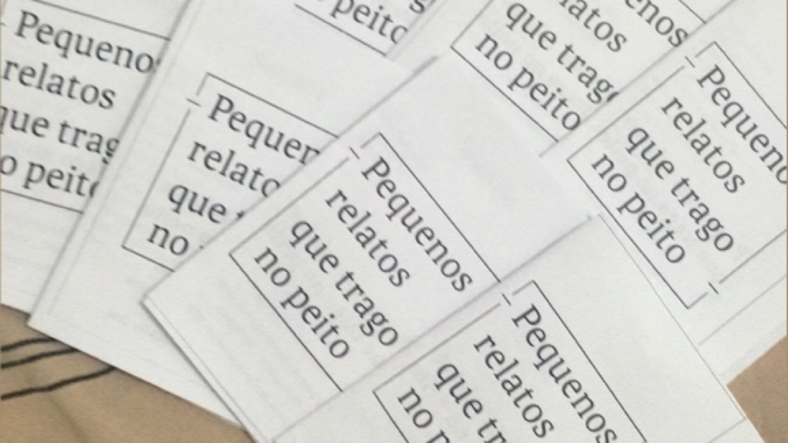

O que é Poezine?
Poezine é um projeto criado por Alessandro Vertigem, que utiliza a fanzine e a poesia como meio para veicular suas percepções acerca do mundo, das pessoas e de si mesmo.
Cada poezine carrega versos únicos, que podem estar ligados em um tema maior ou não.
Poezines:
Essa foi a primeira poezine a ser publicada, nela há poesias que escrevi quando era ainda uma criança. São versos que acompanham a minha trajetória de vida. São pequenos relatos que trago no peito.
Aqui estão compiladas poesias e ilustrações, são versos rápidos, que surgiram de relance em minha mente. Também fiz algumas experimentações com a tipografia das poesias. Versos que vi e não pude esquecer é uma grande experimentação, foi a primeira que utilizei ilustrações e a primeira vez que tentei ilustrar os versos com a própria tipografia.